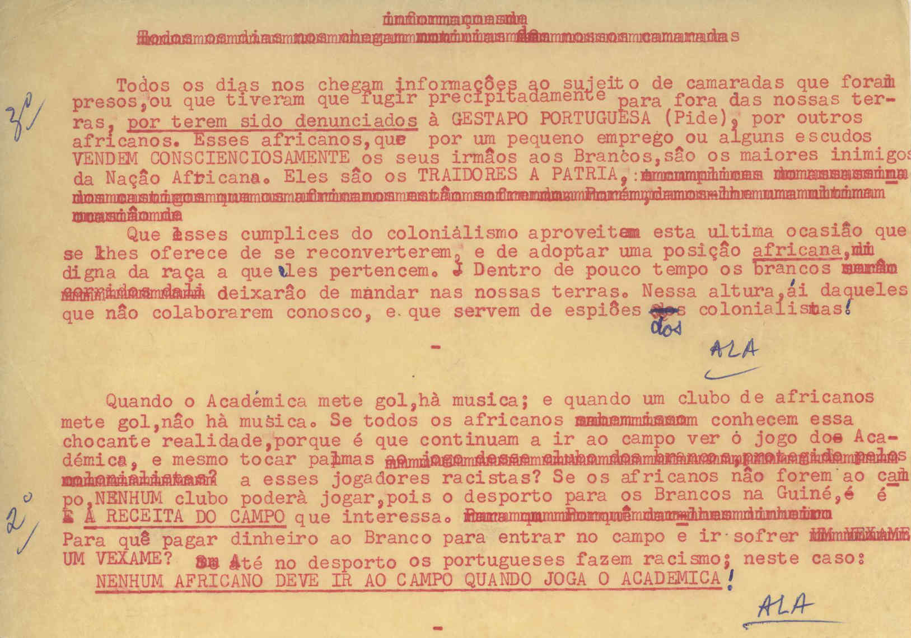
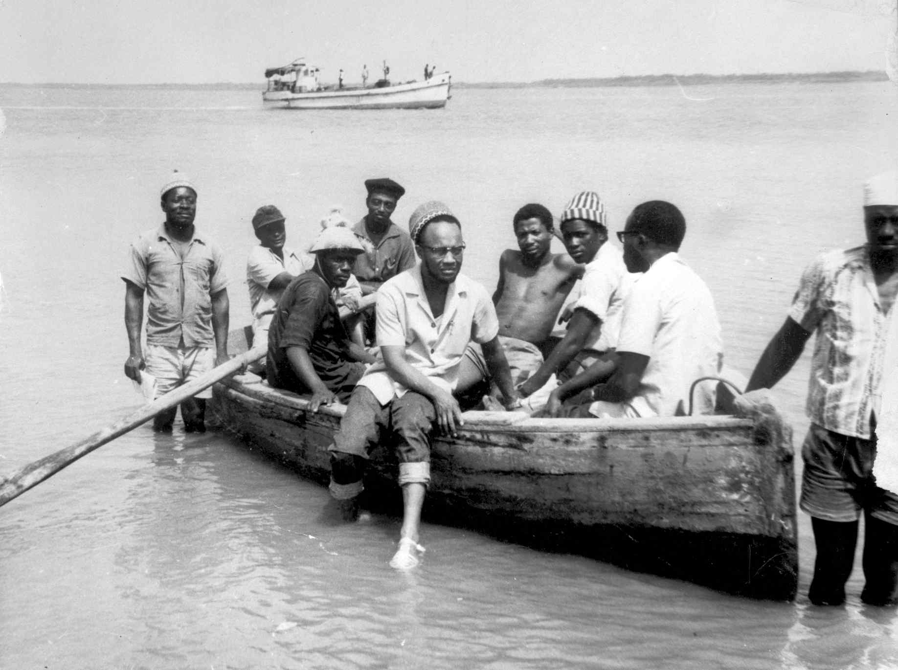
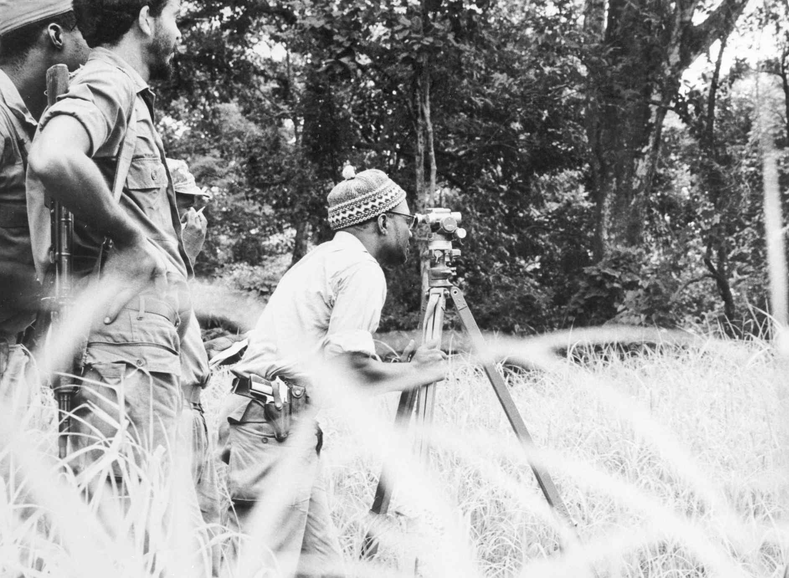
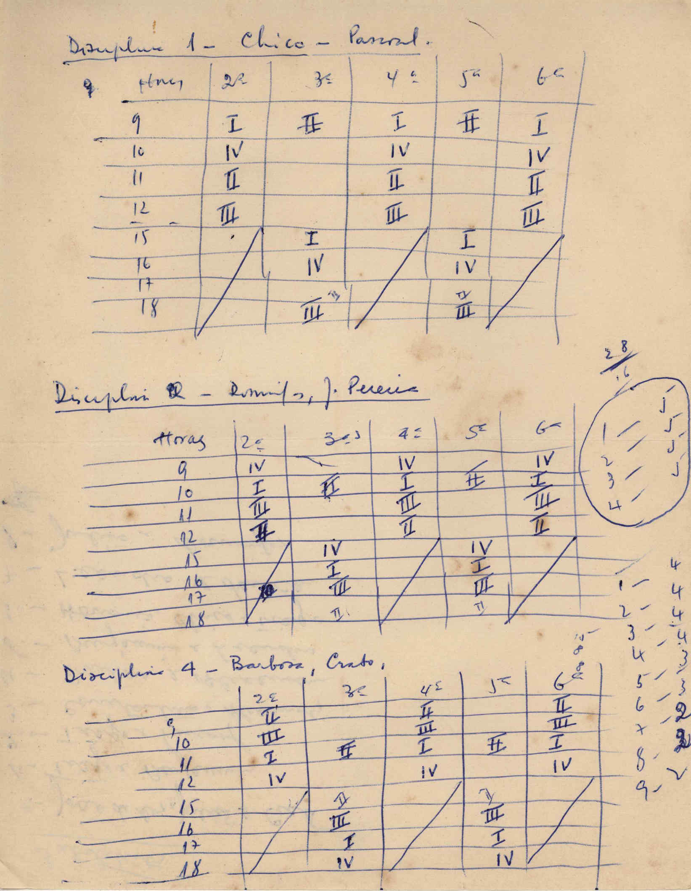

In “The Weapon of Theory,” Amilcar Cabral says that the petty bourgeoisie are best placed to take over after colonialism in part because this class does, indeed, have an understanding of imperialism. After all, who would feel more keenly the denial of personhood, which imperialism administers as politico-economic instrument and effect, than those who feel they are most proximate to it? Who is more aware of the unbridgeable distance between themselves and personhood than those who suffer the constant and brutally apparent nearness of this impossible subject and object of desire, which imperialism imposes with such diabolical rigor? In a complicated, way both in and against the grain of Cabral (and Septima Clark and Frantz Fanon and Elma Francois and Fred Hampton and Claudia Jones and Paule Marshall and George Padmore and Funmilayo Ransome-Kuti and Walter Rodney and Barbara Smith), we have grown accustomed to the unspoken notion that those who are so poised speak most naturally and effectively of and for the anti-colonial impulse and aspiration. But when Cabral says so clearly that there is no contradiction between having an analysis of imperialism and being part of the petty bourgeoisie, and when he suggests so emphatically that such an analysis is an essential feature of the petty bourgeoisie in and after colonialism, and when we remain aware of the labor the petty bourgeoisie does in the construction and maintenance of colonialism and imperialism in and after colonialism and imperialism, in the countries and peoples who continue to be subjected to them, where aftermath and immersion are consubstantial, we might be able to accept the chance—which Cabral offers us—to reconsider our habits. This is a chance for black study to deal with a problem fundamental to black study, which appears at the advent and in the ongoing evolution of black studies, where revolution and devolution are way too close, in comfort.
If we speak now, hopefully under Cabral’s protection, of the neo-colonization of black study by the academic-artistic complex, it wouldn’t be to point fingers, either at others or ourselves, but to try to think, in our tradition, anindexically, in loving discomfort, in the common rub. Consider, then, in the interest of a sometimes necessary timeliness, the current flare-up of the ongoing battle between native and immigrant in the Afro-diasporic quarter of the U.S. academy, which is less like Game of Thrones and more like Gangs of New York insofar as at the end of every day we’re left with the sad phenomenon of a petty bourgeois elite play-fighting amongst themselves while black workers try to make some air to breathe. That air is, and has always been, enjoyed more by their petty bourgeois counterparts than by black workers in the oppressive, genocidal atmosphere of the ongoing and ever intensifying fascist counter-insurgency of whiteness.
Consider, too, that there are no more time-honored and useful categories for the production, reproduction and protection of imperial power and its operations; and for the suppression of peoples’ and the people’s capacity to move, and to rest, both in refusal of home, all irrespective of national borders or identities, than native and immigrant. This is especially true in the United States, whose variant of North American whiteness has always been a noxious mix of these false alternatives. The scraps from this bloody manufacture that are left to non-white petty bourgeois subject citizens, whether they want to claim or disavow becoming-American, consists of fragments of one or the other but never the fullness of both, that wound resolving into a black scar on a white mask, liquidating undercommon differences in the name of cold imperial separation of and within black social life, both in the U.S. and all over the world that the U.S. dominates with ever more murderously slapstick venality. Meanwhile, the petty bourgeoisie works hard, if often unintentionally, to protect the metaphysical foundations of the very imperialism it critically understands. Its performative intellectual reflexes pass for a fantasy of subjectivity that is predicated on their inability to have it. The petty bourgeoisie claims to speak—from a position it assumes but cannot avow—for those who discover the oxygen it can barely produce; it claims to breathe for those who can no longer breathe; it claims to be here, now, for those whose presence was never so easily plotted. It does this unintended, immaterial labor with the best of intentions while postcolonial malaise is visited not upon actual imperial power but upon the petty bourgeois intellectuals themselves—unwitting, and even unwilling, compradors who “choose” the moralistic (out)rage for rhetorical purity that “decolonization” has become over the endless, fugitive, anti-colonial struggle for the survival of ante-colonial life, which is running out of time, as it always has.
The intensity of the trouble lies in that shit like this happens amongst us, the good people of every rotten, brutal, delusional nation-state. Every single person who isn’t really one, and knows why they aren’t and can’t really be one, means well when they speak for those for whom such personhood was less an object of desire and more a ghostly matter to beware and avoid and destroy. Hell, we mean well right now, hoping there’s something in what we say that pierces what we assume in saying it. It’s just that such hope is nothing without practice, such faith is nothing without work, without toil, without that constant, active, undergrounding labor whose by-product will have been our disappearance. This is the content of Cabral’s prophetic description. He sharpens the weapon of theory for us so that we can cut through theory and ourselves. He gives us a chance to see more clearly that the competing chauvinisms of native and immigrant, when the color line constitutes the interdiction of their convergence, obscures intra-diasporic, intra- and international class warfare in every outpost and refuge of Afro-diasporic life. The life and struggles of Negro toilers remain to be thought, and inhabited, as the swerving apposition of the unthought, the unhabitants’ fugitive deconstruction of world and reconstruction of earth. The weapon of theory lets us see through to the social lens we want to see through when we are Negro toilers, too.1
In this light, we might begin to understand the decolonial petty bourgeoisie’s strange incapacity to self-nominate either as a class or as revolutionary while proffering an all but constant critique of imperialism. It turns out not to be such a mystery if we move in the way of analytic description, refusing the opposition of description and analysis while working way off to the side of self-description and self-analysis, as well. Maybe analytic description begins with the awareness that there has to be more to it than analytic description, which is not in and of itself para-ceremonial practice. Black critical reflexivity can’t simply declare itself to have escaped the hall of mirrors that constitutes (self-)representational mind and its political arts. What it will have been to publish has to open onto a kind of devotional incompleteness rather than incompleteness’s disavowal. What sisters will Cabral have been grounding with, sharpening the weapon of theory ‘round a kitchen table in the absence of a kitchen?
What if the absence of the kitchen is a function of something that will have been there? Note the title of Cabral’s famous speech. He uses the phrase “weapon of theory” because he is making an argument for theory. He is coming so far from the other side that he feels he has to make this point. He is coming so far from practice, or more properly, from praxis, from so far outside the house, where the absence of the kitchen makes the kitchen table possible, that he feels like he has to remind his audience that theory is a weapon and that it is our weapon. He’s coming from the farm where he’s done soil analysis, and the tent where he is planning an attack in common defense, in and also out of and also off of these groundings, and saying theory is not just theory but also a weapon. Now, consider how utterly superfluous that phrase sounds today in/to the academic-artistic complex. Of course, theory is a weapon, we often hear. It’s our weapon of choice (but also of deferred necessity, of necessary deferral). But this rallying cry of theory as a weapon heard all but everywhere on the biennial and triennial byways and at every gathering of the institutionalized faithful, has lost the content of the words Cabral uttered at The First Tricontinental Conference of the Peoples of Asia, Africa and Latin America in Havana in January, 1966. He told us theory is part of the arsenal of revolution; he didn’t say that it was the representation of revolution or a possession of the ones who represent.
But today, what is this rallying cry, “theory is my weapon”? And from what practice does theory emerge within the academic-artistic complex? It emerges from a practice in which theory is reduced from a realistic spot of common seeing to an abstract, unoccupiable point of individual expression. It is no wonder that this complex is as tautological as the military-industrial one, which ensures our safety by making the world more dangerous, enforcing precarity in the name of security. Cabral says we are not gathered here to shout at imperialism. That is not how this weapon works. And the main reason it does not work like that is functional, not theoretical. Theory cannot be wielded by a theorist. It cannot be lifted or aimed alone, by a single voice, or even by a chorus of single voices shouting at the enemy. That’s how our weapon gets pried from our own dead, individuated hands and is deployed against us—on the bodily remains we call our own and act like we walk around in—as an instrument of torture and shame. That’s not a revolutionary weapon. Now, when we think about what such a weapon would be, the practice of revolution having come more fully into relief in the obliteration of whatever delusions of repair (which will have always been directed, finally, at the system that breaks rather than those who have been broken), we have the proper reason and the proper tools to get a sense of the importance of what the petty bourgeoisie, which today can be said to include the branch managers, shop owners, independent contractors of the academic-artistic complex, can and cannot, must and must not, do.
Famously, Cabral says that once it has taken power, “the revolutionary petty bourgeoisie must be capable of committing suicide as a class in order to be reborn as revolutionary workers, completely identified with the aspirations of the people to which they belong.” Moreover, he says, “national liberation is essentially a political problem, but conditions for its development give it certain characteristics which belong to the sphere of morals.” Cabral doesn't here say commit class suicide. He says commit suicide as a class. For what if the very idea of class suicide is the deferral of suicide as a class? What if that final act of class will, undertaken by another subject of history substituting for the one—the proletariat—that just won’t ever act right through all its unconcealable lumps or residual lumpenness, is nothing but a final, endlessly recrudescent act of politics, in and on its terms of order and metaphysical completion, where state and subject, in the deadening and anti-differential merger of the individual and the collective, dance their decaying mutual orbit. No, Cabral says commit suicide as a class, which he says will have emerged as a moral problem when we analytically describe the political scene correctly. What if the correct analytical description is one in which class recognition, given in the denial of a constantly enacted class status, is displaced by a constant, experimental exercise of antagonism wherein the economy of mis/recognition is abandoned? At stake, here, is less the commission of a collection of individualized acts and more the omission of the metaphysics that reduces undercommon practice to politics, which is nothing but the act of the individual. What if the moral problem emerges from its subsumption in the political problem when power is neither taken nor democratized but is, rather, refused? Class suicide is a (set of) political act(s); suicide as a class is anti- and ante-political practice. So that the realm of morals, contrary to popular and scientific belief since the West started trying to give birth to itself, and then started trying to secure itself by enclosing all that it determined—in various processes of hyper-rational delusion—was not itself, is not the space/work between subjects in relation. Note that this (dis)solves the old problem concerning the very idea, let alone (im)possibility, of political morality or moral politics. Morality and/or ethics and/or aesthetics don't operate in the imaginary space between subjects (and objects). Practical, antipolitical refusal of the metaphysics of class “morals” are a matter of murmuring. To feel fully the aspirations of the people to which you belong would bring about a terrible and beautiful differentiation in murmuring, an harmonic irresolution of and with and in the choir, in anticipation of a shift in flock, where belonging is in flight from belonging in sharing, at rest in an unrest of constant topographical motion. The weapon of theory is a conference of the birds. The kitchen table is its public and its publisher.
Let us try to expand, with greater precision, on how suicide as a class—the refusal of class and its structures and rituals of membership, which include the simultaneous enactment and denial of class identity—operates outside the distinction between (acts of) commission and omission. Remember William Munny in Unforgiven? He says, "It's a helluva thing killin’ a man—you take away all he’s got and all he's ever gonna have." Well, what kind of thing is suicide? What is suicide's relation to consent’s non-single non-being? The massive work of autodivestiture implies an even more massive practice of mutual aid, where analytic description folds over into or rubs up against communal practice. Perhaps one must go through the hell of having become justified in murder as a response to the brutal disruption of xenogenerosity, a dispossessive availability, in which case murder, or self-murder, is the subject reaction, which is part of the self-indulgent, self-determinative, self-deceptive, nationalist, statist, neo-colonially decolonial program of the petty bourgeoisie, which can always be asserted either from the self-styled immigrant’s or the self-styled native’s position. If national liberation—as it moves through the discourse of self-determination—is a political problem then that is also the extent to which it ought not be our problem, however much it gives us problems, we who live and/or want to live the life and struggles of Negro toilers who, in their contour, in their voluptuousness, in their uneven grounding, in their note-bending, shout-twisting lumpenness, have no class (as Marx will have affirmed with unerring but unhearing insight, as the Panthers knew). Their nonmembership is a practice of nonbelonging.
Now, we can consider (the political problems of) the people who consider themselves the “revolutionary petty bourgeoisie.” Of course, the first problem is that no one so considers themselves. No one any longer uses this Marxist class category but in the voice of a weird anti-communism and in the name of “analysis” instead we hear the casual use of old bourgeois categories: middle class, or professional, or new ones like the precariat or the creatives, all non-analytic descriptors of components in a static system. It is equally unclear that this “class that will not call itself a class” considers itself revolutionary, or at least that members of this self-denying class would use this word in public to describe their outlook, much less their daily activities, with a few exiled exceptions. Nonetheless, there exists a class that does not call itself a class, and will not publicly describe itself as revolutionary, which does indeed have an “understanding” of imperialism that could be called revolutionary and which, moreover, recognizes itself in that understanding, as the bearers of that understanding and, more importantly and more delusionally, as the continually renewable end of that revolution. What are we to make of this telic dehiscence? First, perhaps deferral is a better word. The deferrals of not “being as a class,” and of not declaring “for or of the revolution,” prevent what would be analyses or descriptions of imperialism from having one fundamental consequence, in particular: suicide. On the other hand, they also raise a deeper question: why would we even want this petty bourgeoisie to commit suicide? Or, more pointedly, why would we even want them? Do we require what we desire, which is not from but rather for the petty bourgeoisie, who at least appear to be accomplices in anti-imperialism/colonialism if not in revolution, a contradiction in which they (with)hold themselves? Finally, the question is, what do we want from and for ourselves? Do we suffer a failure or a surfeit of self-consciousness as a class? How do we refuse this strange self-conscious acting out of the class unconscious of the revolutionary petty bourgeoisie?
The point here is a nagging one. Maybe it was wrong to propose that the petty bourgeoisie might make the choice to commit suicide as a class. Huey P. Newton is working on this problem with his idea of revolutionary suicide. He seems not to require the entirety of the class but at the same time to seek some way for that partiality not to fall into individualism. His is not simply a vanguardist asceticism—that the leadership must “die for the people”—but rather an understanding of the way the petty bourgeois could have it both ways, or in other words, how the petty bourgeoisie were/are a true class, operating between the bourgeoisie and the workers. This was the class Newton met in Oakland as his father took him around when it was time for people to pay the monthly bill for the household furnishings they’d bought on time. He saw the durability of a class of local collectors, gathering the evilly distilled wealth of the neighborhood and thereby playing the indispensable role of distinguishing the workers and the lumpen through the function of management and finance; he also saw through mere analysis, which is, in itself, held as comfortably in the hand of policy as a mace or a pike; he saw through what Cabral called the structure of “ownership in society,” which never overlaps directly with the ownership of society, to which the furniture dealer, the furniture manufacturer and the professor lay claim.
Of course, Cabral constantly puts this to the petty bourgeoisie in no uncertain terms—you better make your choice. But Newton saw that this deferral of revolution—given also and with the softest but most certain devastation in the being of a revolutionary class for itself and for others, whose ethics are constantly rehearsed in anti-imperial or anti-racist or anti-trans/homophobic acts or stances or sentiments or intentions—was the fundamental material condition of the revolutionary petty bourgeoisie. When a member of this class says something like after I get tenure, or after I publish my book, or when I get promoted, or once the kids have graduated, or in my second term, or when I start my news blog, this doesn’t indicate strategic miscalculation or a personal flaw, or cowardice, or immorality, no matter who says such thought crimes should are punishable by cancellation, a sentence often uttered and carried out by the etymologically challenged ones who claim to be against incarceration. However, saying such things, and cancelling the ones who say such things, comprise the fundamental condition of being in that class, even when those who defer fool themselves into thinking they have arrived and even when those who defer have an analysis of their constant non-arrival, having arrived at never having arrived being the ultimate deferral of suicide as a class.
Thankfully, Cabral reminds us that the anti-imperial petty bourgeoisie is a real, though not eternal, class. It is real because it is produced in the evolving mode of production. Logistical production distributes management. It does not reduce or dissolve it. It is now all up and down the art market, for instance. Self-management or authorship is the misapprehension through which petty bourgeois class power operates. In any case, a part of this petty bourgeoisie now lives in a suspended condition of deferral and separation fifty years after Cabral while making its analysis every day. But maybe this was always its real condition, which was always also its false condition. Because if they did somehow commit suicide as a class, if that were ever their shared practice, they wouldn't just realize that revolution is already here, they would "exist" as nothing other than the revolution, as and in its militant preservation, like Negro toilers.
Meanwhile, how does analysis, like policy, as policy, sort the revolutionary petty bourgeoisie, the workers, and the lumpen and how, and why, is this left in bourgeois hands, not as a function but as a prerogative? How does this legacy militate against what Martin Luther Kilson saw as happening in some instances and needing to happen in all—a preferential option (as opposed to the talented tenth who are supposed to bear and exercise it)?2 How did imperialism’s opposite come to be framed as anti-communist? As freedom? As the individuated thought: “What is the point of denying to myself what they (you know, them, the white bourgeoisie, the real bourgeoisie) have given to each other?”
There's another speech in which Cabral addresses government employees still working under the Portuguese administration of the colony. He urges them to join their struggle, saying, “Every employment should become a combat post.” If every job is a combat post, then every post becomes partisan, as it is. What if the preferential option is nothing but the common defense against the present option, against every employment deployed against us—including self-employment, including self-care’s refusal of self-denial, which is the essence of just about every job, given in a vast range of mixes of self-exaltation and self-degradation, so that every fucking job is the worst fucking job you could have, a condition you can fight by yourself neither on nor off it. Sorry, Godfather, but ours is not to own the job. We have to fight the job. We have to fight the terms and conditions, the exclusions and separations, that subordinate our work to their job. Theory must be our weapon in that struggle and it must be given in our practice, in how we gather, along our way. Because it’s really not about what we say if that saying doesn’t emerge from and recede into the work we do. No individual act, or collection of individual acts, of expression, which is what even armed resistance is reduced to in the institutionalization of memory, can represent, let alone wield, the weapon of theory. To bear such arms will have been given in the practice that we share and defend, bearing, militantly caring for our differences in common, which is outside any structure or economy of class individuation’s political morality. In the name of an ethical socioecology, in the hope of a general refusal of being petty, this is the revolutionary bourgeoisie, over and out.